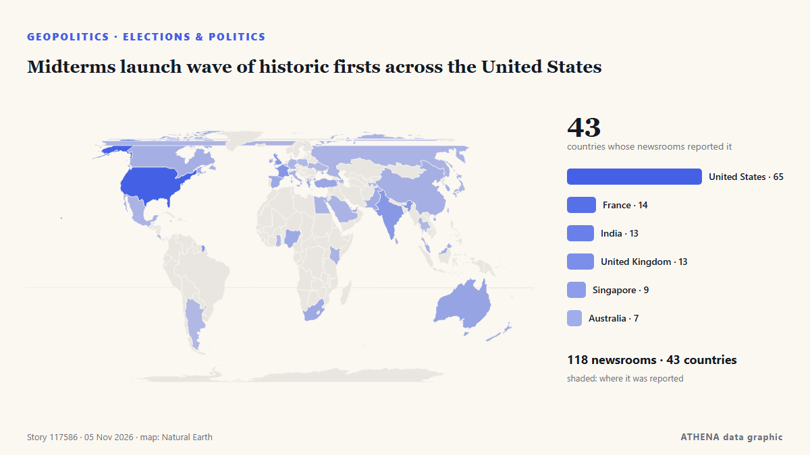

Midterms launch wave of historic firsts across the United States

Αναφέρθηκε ανεξάρτητα από 119 μέσα σε 44 χώρες από τις 2 Νοε, πρώτο το Xinhua (English) — page reader· η κάλυψη κορυφώνεται. Το ATHENA εκτιμά τον κίνδυνο μέτριο (3.3/10), κυρίως λόγω της σοβαρότητάς του και της εμβέλειάς του. Βεβαιότητα 90% (υψηλή): το επιβεβαιώνουν 119 ανεξάρτητα μέσα, μέση αξιοπιστία 72%. Μέσα ανά χώρα: Ηνωμένες Πολιτείες (18), Νότια Αφρική (4), Ινδία (3). Κάλυψη: 2 Νοε έως 3 Νοε, 29 ώρες.
Γιατί έχει σημασία: Οι εξελίξεις στην ασφάλεια και τη διπλωματία μπορούν να μετατοπίσουν συμμαχίες, εμπόριο και αγορές πολύ πέρα από τις χώρες που εμπλέκονται.
Τι άλλαξε: 100 νέες αναφορές από 70 μέσα στο 24ωρο έως 5 Νοε.
Πρώτη διατύπωση: Diaspora leaders say US mid-terms carry high stakes for democracy, Caribbean
Οι τίτλοι των ειδήσεων παρουσιάζονται στα αγγλικά, όπως δημοσιεύτηκαν.
Με μια ματιά
Επιλέγεται, βαθμολογείται και γράφεται από τη δημοσιευμένη μεθοδολογία του ATHENA. Κανένας συντάκτης δεν παρεμβαίνει σε μεμονωμένα γεγονότα. Πώς παράγεται ›
| 02 Nov 07:06 UTC | 2 |
|---|---|
| 02 Nov 10:06 UTC | 4 |
| 02 Nov 13:06 UTC | 5 |
| 02 Nov 16:06 UTC | 1 |
| 02 Nov 19:06 UTC | 5 |
| 02 Nov 22:06 UTC | 4 |
| 03 Nov 01:06 UTC | 1 |
| 03 Nov 04:06 UTC | 5 |
| 03 Nov 07:06 UTC | 5 |
| 03 Nov 10:06 UTC | 10 |
| 03 Nov 13:06 UTC | 8 |
| 03 Nov 16:06 UTC | 15 |
| 03 Nov 19:06 UTC | 11 |
| 03 Nov 22:06 UTC | 14 |
| 04 Nov 01:06 UTC | 10 |
| 04 Nov 04:06 UTC | 23 |
| 04 Nov 07:06 UTC | 32 |
| 04 Nov 10:06 UTC | 19 |
| 04 Nov 13:06 UTC | 14 |
| 04 Nov 16:06 UTC | 14 |
| 04 Nov 19:06 UTC | 8 |
| 04 Nov 22:06 UTC | 6 |
| 05 Nov 01:06 UTC | 3 |
| 05 Nov 04:06 UTC | 2 |
| 04 Nov 06:57 UTC | 2.5 |
|---|---|
| 04 Nov 07:17 UTC | 3.4 |
| 05 Nov 06:51 UTC | 3.3 |
Γιατί αυτοί οι αριθμοί
Σημασία
Κίνδυνος
Βεβαιότητα
Η κάλυψη — ποιος το ανέφερε και πότε
ο τίτλος όπως δημοσιεύτηκε · ανοίγει το πρωτότυπο- Xinhua (English) — page reader · ΚίναDisapproval outpaces approval for S. Korean president's state administration: poll
- NPR · Ηνωμένες ΠολιτείεςWhen it comes to election pressure, this year's Georgia or Michigan could be anywhere
- The Intercept · Ηνωμένες ΠολιτείεςWarnings About ICE at the Polls Risk Their Own Kind of Voter Suppression
- KQED News (San Francisco) · Ηνωμένες ΠολιτείεςThe Election Fraud Evangelizers Targeting Rural Californians
- The Africa Report · ΓαλλίαUS-Africa Week Ahead: Mid-term elections could spell trouble for Trump’s opaque deals
- Democracy Now! · Ηνωμένες ΠολιτείεςHeadlines for November 2, 2026
- Just Security · Ηνωμένες ΠολιτείεςConstitutional Collision Course
- The Hill · Ηνωμένες ΠολιτείεςTrump disapproval hits record 60 percent in new survey
- Law and Crime · Ηνωμένες ΠολιτείεςEmergency motion asks judge to restrain Trump DOJ's 'drastic break' from normalcy and 'halt their intimidation' of voters at polls
- The Hindu · ΙνδίαCPI(M) seeks action against Pendurthi MLA over alleged irregular voting in GVMC polls
- Wired · Ηνωμένες ΠολιτείεςHere’s How the Trump Administration Is Trying to Undermine the Election
- Daily Maverick · Νότια ΑφρικήAfter The Bell: The wonderful and strange business of prognostication
- CommonDreams · Ηνωμένες ΠολιτείεςJudge denies another Trump administration attempt to meddle with voter data in Common Cause v. DOJ
- Business Insider · Ηνωμένες ΠολιτείεςStudent-loan borrowers face 'imminent' harm from Trump's plan to limit borrowing for advanced degrees, judge says
- Law and Crime · Ηνωμένες ΠολιτείεςJudge presses DOJ lawyer to tell him why hundreds more poll monitors are needed, gets same answer over and over again
- Professional Mariner · Ηνωμένες ΠολιτείεςNovember sinking planned for historic ‘SS United States’
- Variety · Ηνωμένες ΠολιτείεςFox News Sets Midterm Elections Coverage: Here’s How to Stream ‘Democracy 26’ Online Free
- Courthouse News · Ηνωμένες ΠολιτείεςJudge keeps block on DOJ action after hearing arguments about ‘unreliable’ voter list
- Mississippi Today · Ηνωμένες Πολιτείες‘Red flag’: Voter inactivations surge in midterms since secretary of state adopted unverified Experian data to clean voter rolls
- The Jerusalem Post · ΙσραήλSecond Israeli national arrested in US federal voter fraud sweep
- KQED News (San Francisco) · Ηνωμένες ΠολιτείεςDozens of Californians Face Voter Fraud Charges. But Proving the Violations May Be Difficult
- Euractiv · ΒέλγιοWhy EU foie gras producers will keep an eye on US midterms
- SABC News · Νότια ΑφρικήVoters reminded not to take pictures inside polling booths
- The Hindu · ΙνδίαAndhra civic polls result highlights: NDA heads for sweep; Jagan says ‘selections, not elections’
- Sydney Morning Herald · ΑυστραλίαA blue tidal wave is coming for Trump. But some polling experts are nervous
- The Irish News (Belfast) · Ηνωμένο ΒασίλειοTom Collins: Rejoice! Today is beginning of end of Donald J Trump
- Jamaica Gleaner · ΤζαμάικαDiaspora leaders say US mid-terms carry high stakes for democracy, Caribbean
- The Jerusalem Post · ΙσραήλJudge blocks Trump administration from pressuring states over noncitizen voting
- RFI English · ΓαλλίαIn Miami’s Little Haiti, ‘Blood’ looks past Trump’s rhetoric as US midterms loom
- Sydney Morning Herald · ΑυστραλίαEx-cops join election security flying squad in major crackdown
- Times of India · ΙνδίαHow Indian-Americans may vote in 2026 US midterms: Explained in 5 charts
- New York Focus · Ηνωμένες ΠολιτείεςIt’s Election Day in New York. Here’s What You Need to Know
- FXStreet · ΙσπανίαUS voters go to the polls as US strikes Qeshm hours after Brent’s 7.6% drop on peace hopes
- The Hill · Ηνωμένες ΠολιτείεςYour hour-by-hour guide to 2026 midterm elections
- Al Jazeera English · ΚατάρAlaska Senate candidates trade accusations ahead of election
- IOL · Νότια ΑφρικήeThekwini voters must judge parties by their record, not their promises
- Newstalk · ΙρλανδίαLeo Varadkar: "People have to be prepared for the midterm results to be disputed"
- Yonhap (English) · Νότια ΚορέαKorean American candidates vie for congressional, gubernatorial seats in U.S. midterms
- APA (English) · ΑζερμπαϊτζάνEarly voting in US midterm elections reaches record 58.7 million
- IOL · Νότια ΑφρικήMarches banned, 24-hour shifts ordered as KZN police face severe election strain